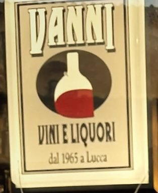
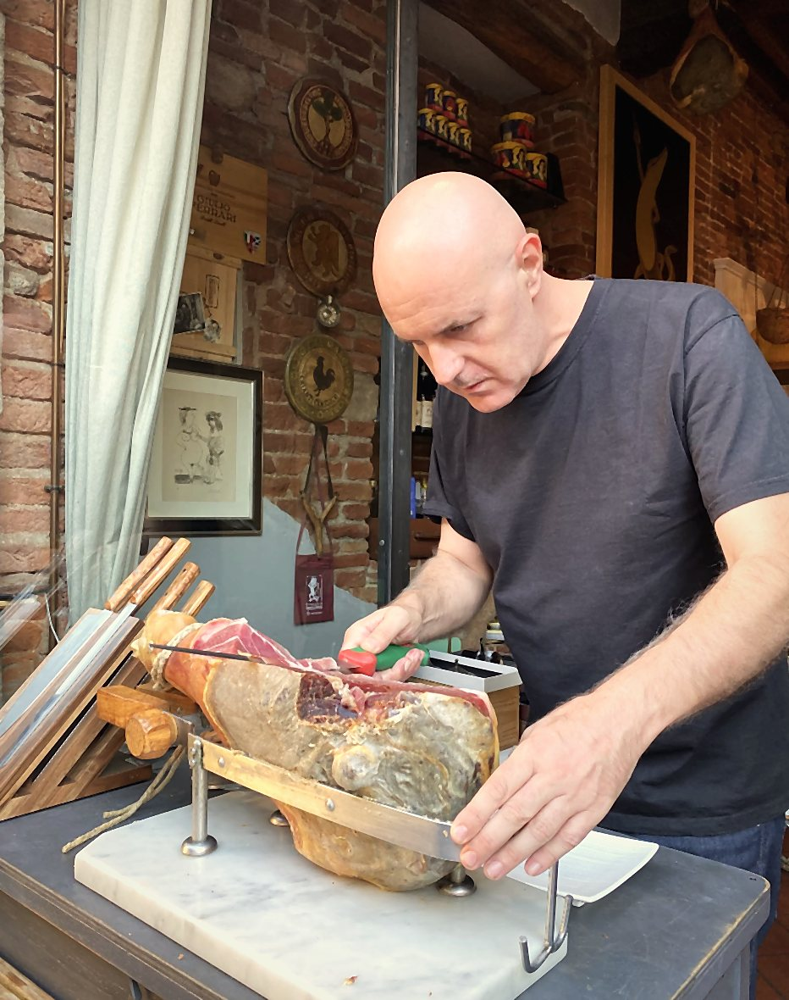
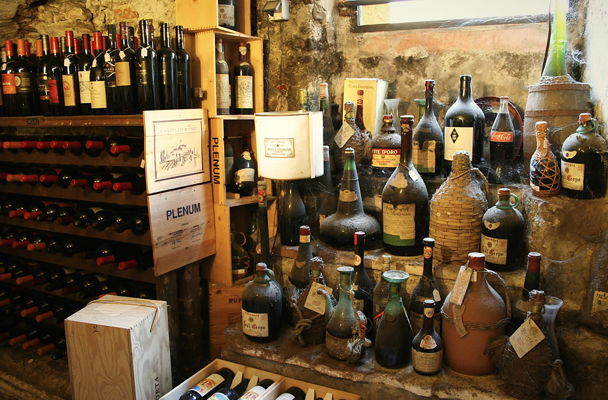

Lucca · Piazza San Salvatore · dal 1965
La più antica enoteca di Lucca
Scendi le scale di pietra: sotto la piazza ci sono cantine rifatte nel 1805 e migliaia di bottiglie da scoprire.


1805Rifatto
Dal 1965
Sessant'anni sotto lo stesso arco
Dal 1965 Vanni sceglie i vini, li conserva sotto terra e li consiglia a chi entra. La porta è sempre la stessa: quella sotto l'arco di pietra, con lo stemma sopra.
- 1965
- Apre l'enoteca in Piazza San Salvatore
- 1805
- L'anno scritto sul muro della cantina
- 60
- Anni festeggiati nel 2025

La vita in enoteca
Si brinda sulla porta
→ Scorri per vedere le altre foto





